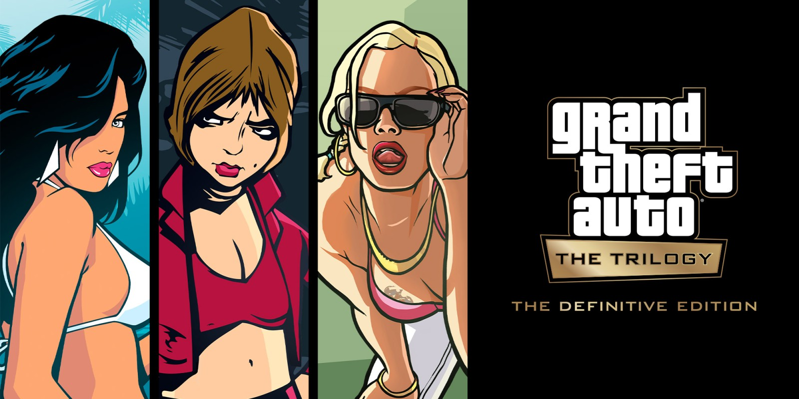

Вот и завершилась уже десятая по счёту церемония вручения наград The Game Awards, в рамках которой отметили лучшие игры 2023 года. Триумфатором вечера ожидаемо стала Baldur’s Gate III — она унесла с собой шесть статуэток, включая одну за «Игру года». Однако в части номинаций творение Larian уступило Alan Wake II — у неё три приза за ивент. Тройку лидеров по числу заработанных наград замыкает Forza Motorsport с двумя статуэтками.
Что будет, если объединить два залипательных хита? Нет, это не начало шутки — команда poncle действительно занимается коллаборацией Among Us и Vampire Survivors. Её оформили в виде DLC для последней под названием Emergency Meeting.
Ещё во время анонса GTA: The Trilogy в 2021-м Rockstar Games заявляла, что сборник выйдет в том числе на телефонах. Но после катастрофического релиза про мобильную версию как будто забыли и вспомнили о ней лишь спустя два года — уже в рамках эксклюзивного соглашения с Netflix.

Издательство Nacon и студия stillalive сообщили, что симулятор садовника Garden Life: A Cozy Simulator стартует 22 февраля. Платформы — ПК (Steam), PlayStation и Xbox; версия для Nintendo Switch увидит свет позже.